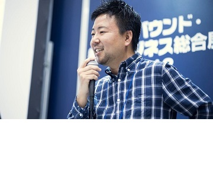

BODメッセージ
The First One 株式会社はベトナムにおける日本の投下資本金があるBPO サービス企業であり、BPO ・テスティングサービスを提供する。目的はCNCである親会社のマーケティングの強みを活用し、日本市場の顧客に向け、国際品質のBPOサービスを提供することである。
共同創設者 中濱 康広
「ニューノーマル時代に打つべき一手」
IT革命が起こりテクノロジーの発展により、世界がぐっと近くなりました。
私は日本でもビジネスを展開していますが、働き方、とくにチームの持ち方は従来型の組織ではなく、場所にこだわらず、フレキシブルに対応できるリモートワークやアウトソーシングを取り入れたクラウド型のチーム編成を推進しています。
ベトナムでは若くて優秀な人材が溢れていて、チャンスをものにしようと眼がギラギラしています。また誠実で温厚な性格も持ち合わせていますので、チームを作るには最適な国だと判断しました。
世界金融危機やコロナウィルス感染症など、予測できない不確実な社会の中で、柔軟かつ大胆な発想で生産性を上げていくこと。これが今ビジネスに求められる一手であり、ザ・ファーストワンはそこを担うチームの一員だと確信しています。
会長 ファム・ ベト・ホアン

「お客様と共に成長し続ける！」
我が社は2018年に設立され、2019年に株式会社コネクター・ジャパンの出資を受け、ベトナムと日本の合弁会社となりました。
日本では、少子高齢化が進み人手不足が深刻になっていくなか、ベトナムへの進出が年々増えております。ベトナムはマーケットの成長が著しく、若くて優秀な人材が多いことから注目されております。 私は小学1年生の時に初めて日本に渡り、17年間暮らしているベトナム人です。日本ではお客様に対してハイレベルなサービス提供、仕事と向き合う真面目さ、世界に誇れる最高の技術に触れることができました。この実体験と経験を活かし、お客様に安心してサービスを使っていただくため、クオリティの追求と挑戦し続ける会社としてザ・ファーストワン株式会社を創業しました。
従業員一人一人がお互い尊重しあい、お客様と一つとなり共に事業を拡大することに努め、現状に満足することなく、お客様満足度・社員満足度を永続的に向上させて参ります。 お客様に最も信頼され共に成長し続けるパートナーとなることを目指します。
代表取締役社長 ルオン・スオン・ハイ
「お客様と一緒に最高のサービスを創りたい」
ここ数年、ベトナム企業と日本企業との協力関係は拡大しています。 現在ベトナムには約500社のBPO企業があり、そのほとんどが日本の取引先に対しBPOサービスを展開しています。
過去10年間の自身の実務経験により、両国企業の成功した取り組みと失敗した取り組み、多くの事例に触れることができました。
最も重要な成功要因は、お客様と一つのチームを創るということでした。一つのチームになるというのは、同じ Slack Workspace や Backlog などツールを共同利用するということではなく、最高のサービスを生み出すできるよう、お客様と同じ立場に立ち、同じ目線で事業を進めるということが大事なことだと考えています。
最高のサービスを創ることは、プロジェクトがどれだけの利益を生み出すかということより、我々にとって重要なことです。またお客様とのパートナーシップが増すことも嬉しいことです。
これからもお客様から高い信用と評価を得るために全力で取り組んで参ります。
我々ザ・ファーストワンに是非ご機会をいただきますようお願い申し上げます。